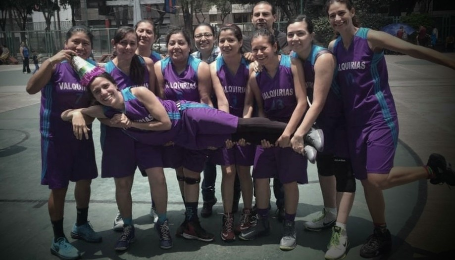

Historia del equipo
Valkirias es un equipo de la liga femenina Benito Juárez, con base en CDMX. Es uno de los equipos que ha participado en dicha liga desde su temporada inaugural en 1997. Desde el principio, han sido un punto de atención primordial en la liga, a pesar de sus débiles comienzos, pasando por su banquillo varios entrenadores diferentes, fue con la llegada del exjugador de Los Angeles Lakers Michael Cooper y las excelentes actuaciones de sus estrellas Adriana Santiago e Ivonne Bañuelos, que Valkirias obtendrían sus primeros dos títulos en 2001 y 2002. Los años posteriores han mantenido buen nivel y han llegado casi siempre a los playoffs, obteniendo del nuevo el título en 2016.
De 1997 a 2007 el equipo fue propiedad de la familia de Rodrigo Slim, también propietarios de Los Angeles Lakers, en 2007 la familia Slim vendió a las Valkirias a un grupo de inversionistas encabezados por Carla Christofferson y Katherine Goodman. Así Valkirias se convirtió en uno de los seis equipos de la liga en ser poseídos y operados de manera independiente, pero en diciembre de 2013 una de las propietarias y presidenta del equipo Paula Madison comunica a la liga que ella y su familia ya no podían hacerse cargo del equipo, ya que desde el 2007 que adquirieron la franquicia habían tenido perdidas por $12 millones, incluyendo los $1.4 millones de la temporada 2013, por lo que el equipo fue puesto en venta a la espera de que la franquicia pudiera quedarse dentro de CDMX
Por su parte la presidenta de la liga, Alejandra Sánchez indicaba que había varios grupos interesados en poseer un equipo de la liga y que la liga estaba considerando las diferentes opciones, una de estas era la de los propietarios de los Golden State Warriors que expresaron públicamente su interés, sin embargo el 5 de febrero de 2014 en una conferencia de prensa, Alejandra Sánchez anuncia que se había aprobado por unanimidad la compra de Valkirias por un grupo de inversionistas liderados por Earvin “Magic” Johnson y por el propietario de Los Angeles Dodgers, Mark R. Walter, el grupo de inversionistas también incluye a los siguientes copropietarios de Los Angeles Dodgers: Todd L. Boehly, Robert L. Patton y Stan Kasten. De esta forma el equipo mantiene su nombre y seguirá disputando sus encuentros en CDMX.